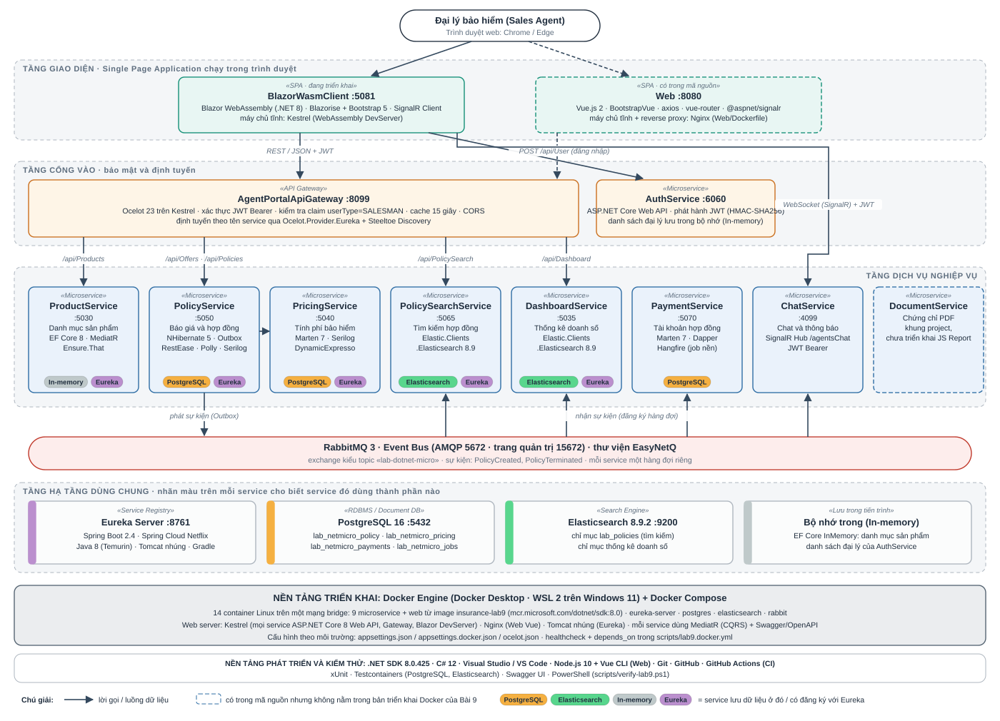

| Sinh viên | Trương Đắc Kiên |
| MSSV | 2424802010029 |
| Lớp | D24CNTT05 |
| Mã nguồn | github.com/KienTD204/Microservices-InsurancePortal-2424802010029 (nhánh student/lab10) |
| Ngày nộp | 15/11/2026 |
Tài liệu này vẽ lại kiến trúc tổng quát của hệ thống đã xây dựng và triển khai thành công qua các bài thực hành 4 đến 9. Sơ đồ không được thiết kế trước mà được khái quát ngược từ hệ thống thật: mọi thành phần, cổng, công nghệ và mối liên kết trong sơ đồ đều được đối chiếu với mã nguồn (*.csproj, Startup.cs, appsettings*.json, ocelot.json) và với bản triển khai Docker Compose của Bài 9 (scripts/lab9.docker.yml, 14 container đang chạy).
Hệ thống phục vụ đại lý bảo hiểm: xem danh mục sản phẩm, tính phí, lập báo giá, chuyển báo giá thành hợp đồng, tìm kiếm hợp đồng, theo dõi doanh số và trao đổi trực tuyến với đại lý khác.

| Thành phần | Cổng | Trách nhiệm | Công nghệ chính | Lưu trữ / giao tiếp |
|---|---|---|---|---|
| BlazorWasmClient | 5081 | Giao diện một trang cho đại lý: đăng nhập, sản phẩm, báo giá, hợp đồng, tìm kiếm, thống kê, chat. | Blazor WebAssembly (.NET 8), Blazorise + Bootstrap 5, SignalR Client, Blazored.SessionStorage | Gọi Gateway và AuthService bằng REST; nối ChatService bằng WebSocket. |
| Web | 8080 | Giao diện một trang viết bằng Vue (bản gốc của hệ thống). | Vue.js 2, BootstrapVue, axios, vue-router, Nginx | Có trong mã nguồn; không nằm trong bản triển khai Bài 9. |
| AgentPortalApiGateway | 8099 | Cổng vào duy nhất của nghiệp vụ: xác thực JWT, kiểm tra claim, định tuyến, cache, CORS. | Ocelot 23, Ocelot.Provider.Eureka, Steeltoe Discovery, JWT Bearer | Không có dữ liệu riêng; định tuyến tới Product, Policy, PolicySearch, Dashboard. |
| AuthService | 6060 | Xác thực đại lý, phát hành JWT (hạn 7 ngày), trả hồ sơ đại lý. | ASP.NET Core Web API, System.IdentityModel.Tokens.Jwt | Danh sách đại lý trong bộ nhớ. |
| ProductService | 5030 | Danh mục sản phẩm bảo hiểm: quyền lợi (cover), câu hỏi, lựa chọn. | EF Core 8, MediatR, Ensure.That | EF Core InMemory; đăng ký Eureka. |
| PricingService | 5040 | Tính phí bảo hiểm theo biểu phí (Tariff) và các luật tính. | Marten 7, DynamicExpresso, MediatR, Serilog | PostgreSQL lab_netmicro_pricing; đăng ký Eureka. |
| PolicyService | 5050 | Service trung tâm: lập báo giá, tạo và hủy hợp đồng, phát sự kiện vòng đời hợp đồng. | NHibernate 5, RestEase, Polly, EasyNetQ, MediatR, Serilog | PostgreSQL lab_netmicro_policy; gọi Pricing bằng REST; phát sự kiện lên RabbitMQ (Outbox). |
| PolicySearchService | 5065 | Tìm kiếm hợp đồng toàn văn. | Elastic.Clients.Elasticsearch 8.9, EasyNetQ, MediatR | Elasticsearch, chỉ mục lab_policies; nhận PolicyCreated. |
| PaymentService | 5070 | Tài khoản hợp đồng, khoản phải thu, ghi nhận tiền về từ tệp sao kê. | Marten 7, Hangfire, Dapper, EasyNetQ, MediatR | PostgreSQL lab_netmicro_payments, lab_netmicro_jobs; nhận PolicyCreated, PolicyTerminated. |
| DashboardService | 5035 | Thống kê doanh số: tổng, theo đại lý, theo thời gian. | Elastic.Clients.Elasticsearch 8.9, EasyNetQ, MediatR | Elasticsearch; nhận PolicyCreated. |
| ChatService | 4099 | Chat giữa các đại lý và đẩy thông báo tức thời khi có hợp đồng mới. | ASP.NET Core SignalR, JWT Bearer, EasyNetQ, MediatR | Không lưu dữ liệu; nhận PolicyCreated. |
| DocumentService | - | Dự kiến sinh chứng chỉ PDF bằng JS Report. | ASP.NET Core Web API (khung) | Mới là project khung, chưa triển khai, chưa chạy. |
| Nhóm | Công nghệ và phiên bản | Vai trò trong hệ thống |
|---|---|---|
| Nền tảng chạy ứng dụng | .NET 8 / ASP.NET Core 8 (C#) | Nền tảng của 9 microservice, Gateway và giao diện Blazor. |
| Web server | Kestrel; Nginx; Tomcat nhúng | Kestrel phục vụ mọi service ASP.NET Core, Gateway và Blazor DevServer; Nginx phục vụ giao diện Vue; Tomcat nhúng trong Spring Boot phục vụ Eureka. |
| Đóng gói và triển khai | Docker Engine (Docker Desktop, WSL 2), Docker Compose | Đóng gói toàn bộ thành 14 container Linux trên một mạng bridge; điều khiển thứ tự khởi động bằng depends_on + healthcheck. |
| API Gateway | Ocelot 23.3 | Định tuyến, xác thực, kiểm tra claim, cache. |
| Service Registry | Netflix Eureka (Spring Boot 2.4, Java 8); Steeltoe 3.2 phía .NET | Đăng ký và tra cứu địa chỉ service theo tên. |
| Message Broker | RabbitMQ 3 (kèm trang quản trị); EasyNetQ 7.8 | Bus sự kiện, exchange kiểu topic lab-dotnet-micro. |
| Cơ sở dữ liệu quan hệ / tài liệu | PostgreSQL 16; NHibernate 5.5, Marten 7.19, Npgsql | Bốn cơ sở dữ liệu tách riêng cho Policy, Pricing, Payment và Hangfire. |
| Máy tìm kiếm | Elasticsearch 8.9.2 | Chỉ mục tìm kiếm hợp đồng và dữ liệu thống kê doanh số. |
| Bảo mật | JWT (HMAC-SHA256), JwtBearer, CORS | AuthService phát hành token; Gateway và ChatService kiểm tra token. |
| Thời gian thực | ASP.NET Core SignalR (WebSocket) | Hub /agentsChat cho chat và thông báo. |
| Điều phối trong service | MediatR 12 | Tách Command/Query khỏi Controller (CQRS). |
| Chịu lỗi | Polly 8, RestEase | PolicyService gọi PricingService, tự thử lại 3 lần cách nhau 3 giây. |
| Tác vụ nền | Hangfire 1.8; IHostedService | Job đọc tệp sao kê mỗi phút (Payment); luồng đẩy Outbox mỗi giây (Policy). |
| Tài liệu API, nhật ký | Swagger/OpenAPI (Swashbuckle), Serilog | Trang thử API của từng service; ghi log. |
| Kiểm thử và CI | xUnit, Testcontainers, GitHub Actions | Kiểm thử đơn vị và tích hợp; tự build và chạy test khi đẩy mã. |
| Giao diện | Blazor WebAssembly, Blazorise, Bootstrap 5; Vue.js 2, BootstrapVue | Hai bản giao diện một trang cho đại lý. |